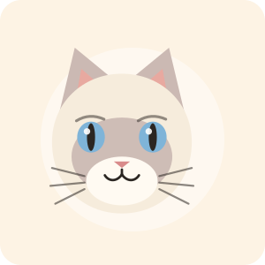
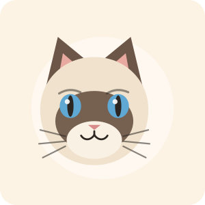
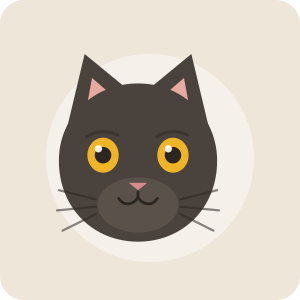

中华田园猫
狸花猫
黄褐底配深色虎斑，四肢结实。适应力极强，警觉、独立。
黄褐底配深色虎斑，四肢结实。适应力极强，警觉、独立。

圆头圆脸，被毛短而密。性格温和、耐性好，注意控制体重。

蓝眼睛加重点色，被抱起来会软下去。性格黏人，适合家里常有人；长毛需要每天梳，否则容易打结。

脸、耳、四肢颜色深，身体浅，眼睛湛蓝。怕冷，冬天喜欢钻进被窝。

性格大多外向、爱吃。

一双黄眼睛格外亮。拍照很难，但抱起来手感极好。
| 品种 | 体型 | 毛长 | 性格 | 掉毛 | 适合新手 |
|---|---|---|---|---|---|
| 狸花猫 | 中等 | 短 | 独立、警觉 | 中 | 较适合 |
| 英国短毛猫 | 中偏大 | 短而密 | 温和、稳定 | 较多 | 很适合 |
| 布偶猫 | 大 | 长 | 黏人、安静 | 多 | 适合（需梳毛） |
| 暹罗猫 | 中等 | 短 | 活泼、话多 | 少 | 一般 |
| 橘猫 | 易偏胖 | 短 | 外向、贪吃 | 中 | 较适合 |
| 黑猫 | 不定 | 不定 | 看个体 | 中 | 较适合 |
提醒：品种猫常见的遗传问题比好不好看更值得提前了解